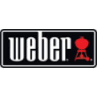

Fast learning professional with 7+ years of international marketing and project management experience in the technology, payments and retail industry . Track record of leading high-visibility strategic programs across multiple markets and teams, including the launch of the first PayPal TV commercial in Western Europe.
|  |
EMEA Program Manager & PMO- Berlin, Germany
|
PMO EMEA, EMEA Planning & Strategy- Paris, FranceProgram management key strategic initiatives, e.g.
|
Program and Process Manager (PMO), CEMEA- Paris, France
|